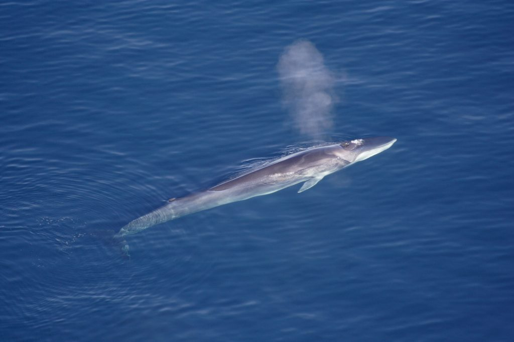

Animais em Extinção
Contact: emanuellybafitis@gmail.com


Baleia-fin (Balaenoptera physalus)
A baleia-fin é a segunda maior espécie baleia, com cerca de 27 metros de comprimento e peso médio de 70 toneladas.Esta espécie de baleia já foi considerada "em perigo", porém com a proibição da caça comercial no oceano Pacífico e no hemisfério Sul, contribuiu para que a população aumentasse.
Ambientalistas e organizações afirmam que as campanhas de conservação da espécie devem ser mantidas a fim de preservar a espécie.